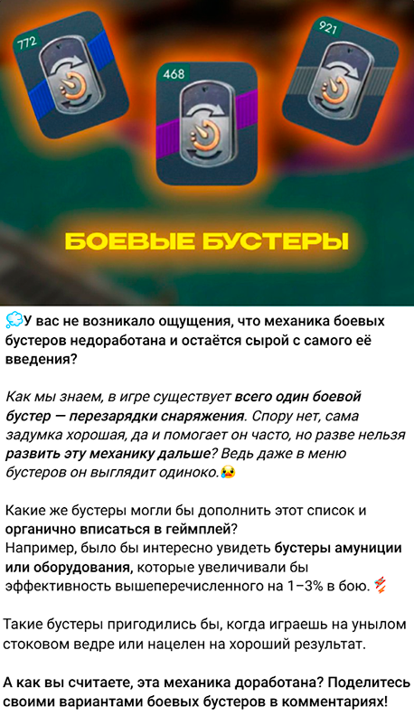
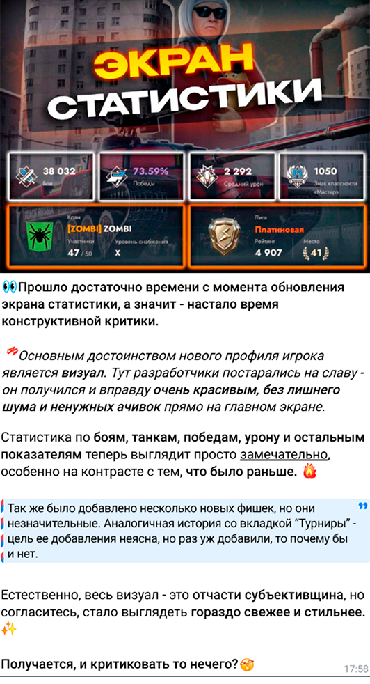

МИХАИЛ
Автор креативных постов для Telegram
О СЕБЕ
Я пишу креативные, живые и вовлекающие тексты для Telegram-каналов. Если вам нужен стильный, нестандартный пост — я тот, кто справится. Умею в сторителлинг, структуру, нативную рекламу и читаемый текст, который не пролистывают.
А ещё — создаю продающие тексты: лендинги, описания услуг, рекламные блоки. Помогаю донести смысл так, чтобы захотелось кликнуть, купить или записаться. Сейчас открыт к коммерческим интеграциям — делаю рекламные посты, а не только авторские.
Все изображения для постов — это моя собственная работа, созданная в Photoshop.
УСЛУГИ
- 1. Посты для Telegram-каналов Напишу серии постов для вашего канала: от экспертных до развлекательных. Учту стиль, аудиторию и тематику канала. Возможна работа по шаблонам, рубрикам и даже с вашим сырьем (черновиками, мыслями, ссылками). Гарантирую грамотность, легкость чтения и вовлеченность.
- 2. Тексты для сайтов Наполнение страниц: "О нас", "Услуги", "Преимущества", "FAQ", лендинги. Работаю в паре с веб-дизайнером или самостоятельно. Подберу структуру, оформлю блоки, предложу тексты кнопок и заголовков. Учитываю цели бизнеса и целевую аудиторию.
- 3. Правки и адаптация Если у вас уже есть текст, но он «не заходит» — я перепишу его, сохранив суть и усилив посыл. Работаю как с длинными текстами, так и с короткими продающими формулировками.
- 4. Единый стиль для проекта Хочется, чтобы весь текст на сайте и в соцсетях звучал единообразно? Помогу выстроить тон общения с клиентом: от дружелюбного до делового. Могу предложить гайд по стилю для дальнейшей работы.
ПОРТФОЛИО
Постарался выделить самые показательные посты в моей практике.
(кликните, чтобы увидеть только текст)

